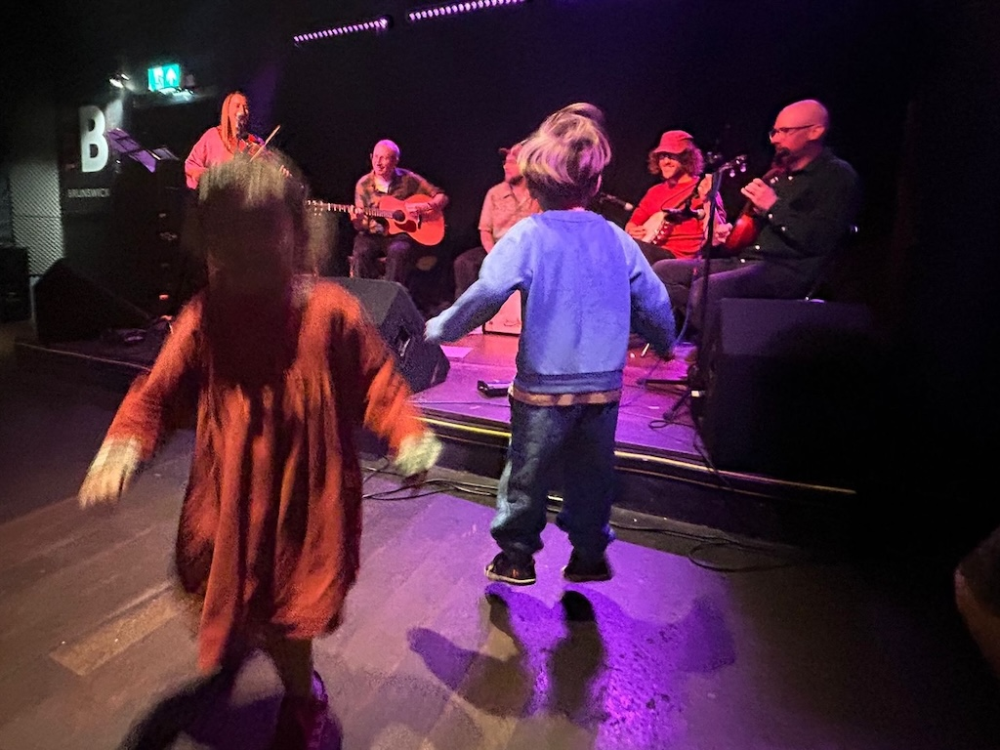

Live folk music
Live traditional Irish, English, Scottish, and Eastern European dancing tunes.
Sussex · All welcome
Come and dance, skip and twirl your way through a joyful family ceilidh, designed especially for young children and their grown-ups.

Live traditional Irish, English, Scottish, and Eastern European dancing tunes.
Simple dances for ages 0–8.
Babies under 1 go free.
Learn some simple ceilidh dances or just sit back, relax and enjoy the live music.
Little folk ceilidh at Ropetackle Arts Centre, Shoreham, 9th May 2026, 2.30pm
Sold out